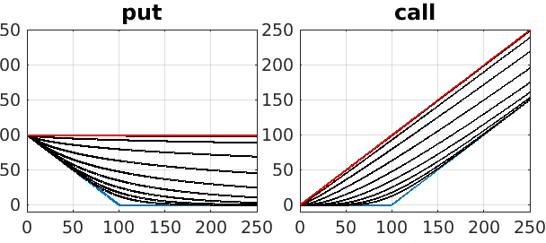
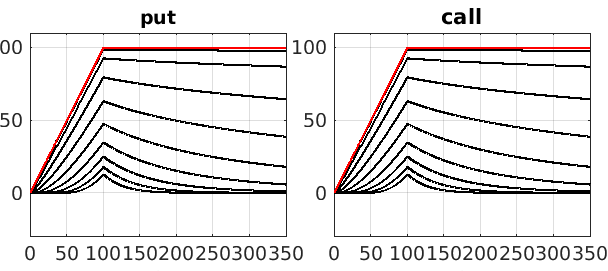
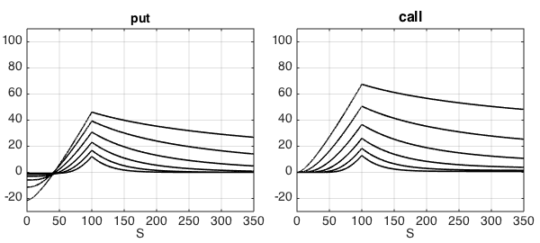
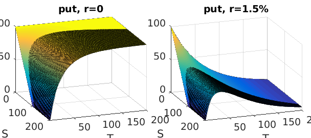
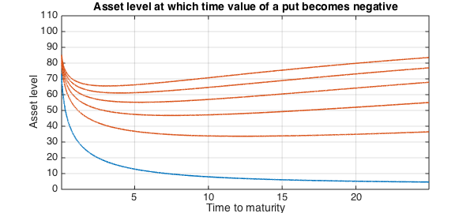
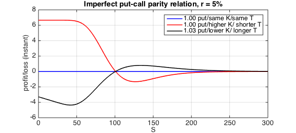

Introduction
Call and put options, the financial products that were relatively illiquid and highly specialized 40 years ago, are nowadays traded frantically on all asset types all over the world. They are commonly referred as "vanilla options", to disguinsh them from their more "exotic" cousins. Financial professionals take decision on a day-to-day basis through the intution they have built around these simple contracts. What is the impact of increasing the maturity? Or lowering the volatility? Is an increase in the interest rates going to hurt me? Clearly obtaining a price is not only what matters!
In this example we use Chebfun to explore different aspects of European call and put options. The goal here consists in making sense of their response when tweaking and playing with the different parameters of the Black-Scholes formulas. Similar in spirit, two classic books that discuss at some length the behaviour of vanilla contracts are [1] and [2].
In the Black-Scholes framework (underlying prices folloging a GBM process, constant volatility, etc), prices of a call and a put at time $t=0$, $C$ and $P$ respectively, are given by
$$ C:=C[S,K,r,T,\sigma] = N(d_1) S - N(d_2) K e^{-rT}, $$
and
$$ P:=P[S,K,r,T,\sigma] = N(d_2) K e^{-rT} - N(d_1) $$
where
$$ d_1 = \frac{1}{\sigma\sqrt{T}} \Bigl( \ln\Bigl(\frac{S}{K}\Bigr) + \Bigl(r+\frac{\sigma^2}{2} \Bigr)T \Bigr), \quad d_2 = d_1 - \sigma \sqrt{T}, $$
$N(\cdot)$ is the CDF of the standard normal distribution, $T$ is the time to expiry, $K$ is the strike, $S$ is the price of the underlying at time zero, $\sigma$ is the volatility, and $r$ is the risk-free rate.
The function handle vanilla implements (in a rather compact form) these formulas, leaving the five market/contract parameters as input variables. The sixth input, $W$, is set to $1$ for a call option and $-1$ for a put option.
vanilla = @(S,K,T,vol,r,W) W * ( ... S.*normcdf(W*((log(S./K)+(r+0.5*vol.^2).*T)./(vol.*sqrt(T)))) - ... K.*normcdf(W*((log(S./K)+(r-0.5*vol.^2).*T)./(vol.*sqrt(T)))).*exp(-r.*T));
The previous formulas are valid for $T>0$. We create a handle for the payoff at $T=0$, which depends only on the asset price and the strike:
payoff = @(S,K,W) max(0,W*(S-K));
Zero Interest Rate
When the risk-free interest rate is zero, the behaviour of vanilla options is easier to understand -- or at least simpler than in the non-zero case. At the time of writing, and with the global interest rates at historic lows, this is an assumption not too far from reality.
r = 0; % risk-free rate
We start by plotting the price of the contract as a function of the underlying asset $S$ for various expiration times while keeping all other parameters constant.
LW = 'linewidth'; FS = 'fontsize'; fs = 14;
K = 100; % at-the-money strike
vol = 0.45; % historical volatility
dom = [0 K 350];
callT = chebfun(@(s) payoff(s,K,+1),dom);
putT = chebfun(@(s) payoff(s,K,-1),dom);
subplot(1,2,1), plot(putT,LW,1.6), hold on,
subplot(1,2,2), plot(callT,LW,1.6), hold on
for T = 2.^(-1:8)
subplot(1,2,1); plot(chebfun(@(s) vanilla(s,K,T,vol,r,-1),dom),'k')
subplot(1,2,2); plot(chebfun(@(s) vanilla(s,K,T,vol,r,+1),dom),'k')
end
subplot(1,2,1); plot(chebfun(@(s) vanilla(s,K,1000,vol,r,-1),dom),'r'), hold on,
set(gca,'XTick',dom(1):50:dom(end),FS,fs,'position',[0.05,0.13, 0.42,0.75])
title('put',FS,18), xlabel('S',FS,fs), xlim([0 250]), ylim([-10 250]); grid on,hold off
subplot(1,2,2); plot(chebfun(@(s) vanilla(s,K,1000,vol,r,+1),dom),'r'), hold on,
set(gca,'XTick',dom(1):50:dom(end),FS,fs,'position',[0.55,0.13, 0.42,0.75])
title('call',FS,18), xlabel('S',FS,fs), xlim([0 250]), ylim([-10 250]); grid on,hold off

The payoffs at expiry (the blue lines in both figures) show an evident but important difference in the gains of going long a call or a put: for the former it is bounded by $K$ while for the later is unbounded. The eight black lines, from lowest to highest, show the prices for expiry times $2^{-1},2^0,2^1,\ldots,2^8$, and the red line shows the profile for $T=1,000$, which is effectively infinity (in practice its rare to find options with maturities longer than 10 years).
The behaviour for large $T$ can be explained from the distribution of the underlying asset, which is assumed to be lognormal. As $T$ increases the distribution becomes more and more concentrated towards the left, implying that the price of the asset tends to zero regardless of its initial level. For the put, this results in the maximum possible payoff, $K$.
Put-Call Parity
The figures above suggest a certain symmetry between the two contracts, as if the call profiles were obtained by rotating and scaling the profile of the put. The exact relation between them is known as the put-call parity and is given by
$$ C = P + S - K $$
An interpretation of this formula is that a call can be replicated by a portfolio consisting of a put with the same strike and maturity, a unit of the underlying asset, and a negative constant ammount $K$ which can be interpreted as borrowed money (remember that we keep working with $r=0$ so no interests are paid on loans). This relation explains the behaviour towards infinity of the call option, the diagonal red line in the figure above.
In practice it is often the case that one cannot trade the instruments with the exact desired parameters. Chebfun allows us to quickly calculate the impact of a hedge based on an imperfect put-call parity relation. For example, consider the case of selling an at-the-money 6-months call option, which could incur in great losses if the asset increase too much in value. The risk can be hedged by buying the underling asset (which will protect us if the price goes up) and buying a put (which will protect us if the price goes down), financed with a loan for an amount $K$.
call = chebfun(@(s) vanilla(s,100,.5,vol,r,+1), [0 300]); asset = chebfun(@(s) s, [0 300]); loan = K;
We consider three strategies based on the choice of the put: one with the same paremeters as the call (blue), one with a higher strike and shorter maturity (red), and one with lower strike, longer maturity and slightly larger notional of 1.03 instead of 1 (black). We set these strikes/maturities so the hedge is at par when $S=100$.
r = 0;
put1 = chebfun(@(s) 1.00*vanilla(s,100.0,.50,vol,r,-1), [0 300]);
put2 = chebfun(@(s) 1.00*vanilla(s,105.5,.25,vol,r,-1), [0 300]);
put3 = chebfun(@(s) 1.03*vanilla(s, 94.5,.75,vol,r,-1), [0 300]);
error1 = (put1+asset-loan)-call;
error2 = (put2+asset-loan)-call;
error3 = (put3+asset-loan)-call;
clf
plot(asset,error1,'b', asset,error2,'r', asset, error3,'k',LW,1.6),
title('Imperfect put-call parity relation, r=0')
ylim([-6 8])
set(gca,FS,fs), xlabel('S',FS,fs), ylabel('profit/loss (instant)',FS,fs)
legend('1.00 put/same K/same T','1.00 put/higher K/ shorter T', '1.03 put/lower K/ longer T')
grid on

Regardless of the move of the underlying, the first strategy will perfectly hedge the call position. The second strategy will see losses if the asset prices go up and gains if they drop. The third strategy will benefit from an increase in prices and will see losses if the price falls. We calculate the maximum instant losses and the price levels at which the occur:
[ls2,as2] = min(error2); [ls3,as3] = min(error3); disp(['Max loss stgy 2: ' num2str(ls2) ' at ' num2str(as2)]) disp(['Max loss stgy 3: ' num2str(ls3) ' at ' num2str(as3)])
Max loss stgy 2: -1.6817 at 124.433 Max loss stgy 3: -3.7783 at 43.4027
Implicit and time value
The implicit value of an option is the payoff that would be obtained if exercised at the current asset price, i.e., it is the payoff profile depicted in blue in the first figure of this example. The time value is the difference between the price and the implicit value and it measures the value of not exercising the option.
for T = 2.^(-1:8)
put = chebfun(@(s) vanilla(s,K,T,vol,r,-1), dom);
subplot(1,2,1), plot(put - putT,'k'), hold on,
call = chebfun(@(s) vanilla(s,K,T,vol,r,+1), dom);
subplot(1,2,2), plot(call - callT,'k'), hold on,
end
put = chebfun(@(s) vanilla(s,K, 1000,vol, r,-1),dom);
subplot(1,2,1), plot(put - putT,'r')
set(gca,'XTick',dom(1):50:dom(end),FS,fs,'position',[0.05,0.13, 0.42,0.75])
title('put',FS,fs), xlabel('S',FS,fs), ylim([-30 110]); grid on,hold off
call = chebfun(@(s) vanilla(s,K, 1000,vol,r,+1),dom);
subplot(1,2,2), plot(call - callT,'r'),
set(gca,'XTick',dom(1):50:dom(end),FS,fs,'position',[0.55,0.13, 0.42,0.75])
title('call',FS,16), xlabel('S',FS,fs), ylim([-30 110]); grid on,hold off

It follows from put-call parity, when rates are zero, that the time value should be the same for both types of options, which can be seen in the figure. Also when rates are zero, the options always hold more value before expiry, as the time value is always positive. Finally, notice that the time value is greater at the strike, and it decays to zero away from this value.
Non-zero interest rates
We repeat the previous calculations with a non-zero value for interest rates. We focus on shorter maturities, between 0.5 and 4 years.
r = 0.015;
for T = 2.^(-1:4)
put = chebfun(@(S) vanilla(S,K,T,vol,r,-1), dom);
subplot(1,2,1), plot(put - putT,'k'), hold on,
call = chebfun(@(S) vanilla(S,K,T,vol,r,+1), dom);
subplot(1,2,2), plot(call - callT,'k'), hold on,
end
subplot(1,2,1),
set(gca,'XTick',dom(1):50:dom(end),FS,fs,'position',[0.05,0.13, 0.42,0.75])
title('put',FS,fs), xlabel('S',FS,fs), xlim([0 350]), ylim([-30 110]); grid on,hold off
subplot(1,2,2),
set(gca,'XTick',dom(1):50:dom(end),FS,fs,'position',[0.55,0.13, 0.42,0.75])
title('call',FS,16), xlabel('S',FS,fs),xlim([0 350]), ylim([-30 110]); grid on,hold off

By increasing the rate from 0 to 1.5% the behaviour of the vanilla options has changed completely, particularly for the put. We highlight a couple of interesting features. First, notice how for the call option the time value decays to zero to the left of the strike but reaches a plateau to the right of it, at the level $K-K\exp(-rT)$. Second, notice how for the put option the time value is negative to the left of the strike. This means that if the underlying asset was trading at a very low level, deep in-the-money, it would be more profitable to exercise immediately the option rather than holding to it. This consideration is irrelevant for European options, which cannot be exercised before the expiry date, but crucial for American options, which incorporate an early exercise feature.
The following two figures might help making some sense of this behaviour. We show the prices of a put option as a 2D function of the underlying price and the time to expiry, with $r=0$ in the left panel and with $r=1.5$% in the right panel.
put = chebfun2(@(s,t) vanilla(s,K,t,0.45,0.0,-1),[0 200 0.001 200]);
subplot(1,2,1), plot(put), set(gca,'cameraposition',[1347 -347 346]);
xlabel('S'), ylabel('T'),zlim([0 100]), title('put, r=0',FS,fs)
set(gca,FS,fs,'position',[0.05,0.13, 0.42,0.75])
put = chebfun2(@(s,t) vanilla(s,K,t,0.45,0.015,-1),[0 200 0.001 200]);
subplot(1,2,2),plot(put), set(gca,'cameraposition',[1347 -347 346]);
xlabel('S'), ylabel('T'), zlim([0 100]), title('put, r=1.5%',FS,fs)
set(gca,FS,fs,'position',[0.55,0.13, 0.42,0.75])
%

The asset level at which the time value becomes negative for a put option is a function of the time to maturity. We use the roots command in a 2D chebfun to obtain this dependence.
clf,
for r = 0.0005:0.010:0.0550
put = chebfun2(@(t,s) vanilla(s,K,t,vol,r,-1) - payoff(s,K,-1),[0.001 25 0 100]);
plot(roots(put),LW,1.6), grid on, hold on
end
ylim([0 110])
ylabel('Asset level',FS,fs);
xlabel('Time to maturity',FS,fs);
title('Asset level at which time value of a put becomes negative',FS,fs)

On the other hand the time value of a call option remains positive with a non-zero $r$, which means that for a call an early exercise would never be more profitable than holding the option until maturity.
Put-call parity (again)
We finish this example by reapeating the calculations of the imperfect hedge for the call, using the put-call parity relation for the case of non-zero interest rates, given by
$$ C = P + S - K \exp(-rT) $$
Again, we have set the strike/maturities of the put so the hedge is at par when $S=100$.
r = 0.05;
call = chebfun(@(s) vanilla(s,100,.5,vol,r,+1), [0 300]);
asset = chebfun(@(s) s, [0 300]);
loan = K*exp(-r*0.5);
put1 = chebfun(@(s) 1.00*vanilla(s,100.0,.50,vol,r,-1), [0 300]);
put2 = chebfun(@(s) 1.00*vanilla(s,105.5,.25,vol,r,-1), [0 300]);
put3 = chebfun(@(s) 1.03*vanilla(s, 95.,.75,vol,r,-1), [0 300]);
error1 = (put1+asset-loan)-call;
error2 = (put2+asset-loan)-call;
error3 = (put3+asset-loan)-call;
clf
plot(asset,error1,'b', asset,error2,'r', asset, error3,'k',LW,1.6),
title('Imperfect put-call parity relation, r = 5%')
ylim([-6 8])
set(gca,FS,fs), xlabel('S',FS,fs), ylabel('profit/loss (instant)',FS,fs)
legend('1.00 put/same K/same T','1.00 put/higher K/ shorter T','1.03 put/lower K/ longer T')
grid on

[ls2,as2] = min(error2); [ls3,as3] = min(error3); disp(['Max loss stgy 2: ' num2str(ls2) ' at ' num2str(as2)]) disp(['Max loss stgy 3: ' num2str(ls3) ' at ' num2str(as3)])
Max loss stgy 2: -1.3221 at 126.6522 Max loss stgy 3: -4.3586 at 41.9083
References
-
S. Natenberg, Option Volatility & Pricing: Advanced Trading Strategies and Techniques, McGraw-Hill Professional, 2nd edition, 1994.
-
J. Hull, Options, Futures and Other Derivatives, Pearson Education, 9th edition, 2014.